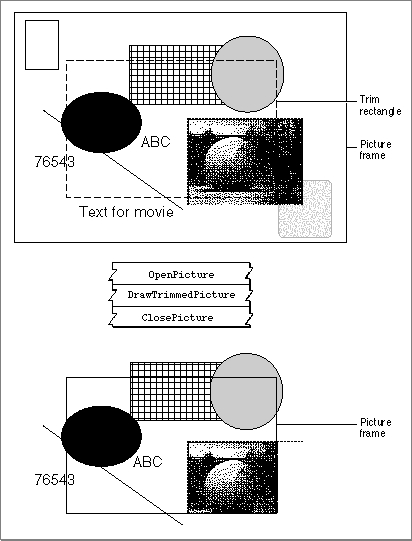

DrawTrimmedPicture
TheDrawTrimmedPicturefunction draws an image that is stored as a picture into the current graphics port and trims that image to fit a region you specify.pascal OSErr DrawTrimmedPicture (PicHandle srcPicture, const Rect *frame, RgnHandle trimMask, short doDither, ProgressProcRecordPtr progressProc);
srcPicture- Contains a handle to the source image; stored as a picture.
frame- Contains a pointer to the rectangle into which the decompressed image is to be loaded.
trimMask- Contains a handle to a clipping region in the destination coordinate system. The decompressor applies this mask to the destination image and ignores any image data that fall outside the specified region. Set this parameter to
nilif you do not want to clip the source image. In this case, this function acts like QuickDraw'sDrawPictureroutine, but it also allows you to control dithering and assign a progress function. (See Inside Macintosh: Imaging for more onDrawPicture.)doDither- Indicates whether to dither the image. Use this parameter to indicate whether you want the image to be dithered when it is displayed on a lower-resolution screen. The following constants are available:
defaultDither
Indicates that the dithering in the source file is to be respected.forceDither- Indicates that the specified image should be dithered whether the source uses dithering or not.
suppressDither- Indicates that dithering should not be used in any case. The ability to suppress dithering can be useful if, for example, you have a 32-bit, color JPEG image drawn into an 8-bit buffer with a custom color table from the image. In that case, dithering would not be necessary and probably not desirable, particularly if the buffer were to be compressed with the graphics compressor.
progressProc- Points to a progress function structure. During the compression operation, the compressor may occasionally call a function you provide in order to report its progress (see "Progress Functions" beginning on page 3-146 for more information about progress functions). If you have not provided a progress function, set this parameter to
nil. If you pass a value of -1, you obtain a standard progress function.DESCRIPTION
TheDrawTrimmedPicturefunction works with compressed image data--the source data stays compressed. The function trims the image to fit the specified clipping region. Figure 3-10 shows how theDrawTrimmedPicturefunction works. It illustrates how you can use this function to save part of a picture (the clipped or uncompressed image data that is not within the trim region is ignored and is not included in the destination picture). All the remaining objects in the resulting image are clipped. You use QuickDraw'sOpenPictureandClosePictureroutines to open and close the destination picture. (For more onOpenPictureandClosePicture, see Inside Macintosh: Imaging.)Note that if you just use a clip while making a picture, the data--though not visible--is still stored in the picture.
Figure 3-10 The operation of the
DrawTrimmedPicturefunction
RESULT CODES
noErr 0 No error paramErr -50 Invalid parameter specified memFullErr -108 Not enough memory available codecAbortErr -8967 Operation aborted by the progress function SEE ALSO
If your source image does not fit in memory, use theDrawTrimmedPictureFilefunction, which is described in the next section.